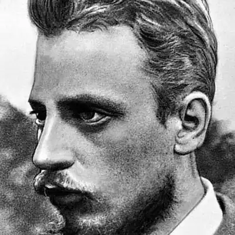
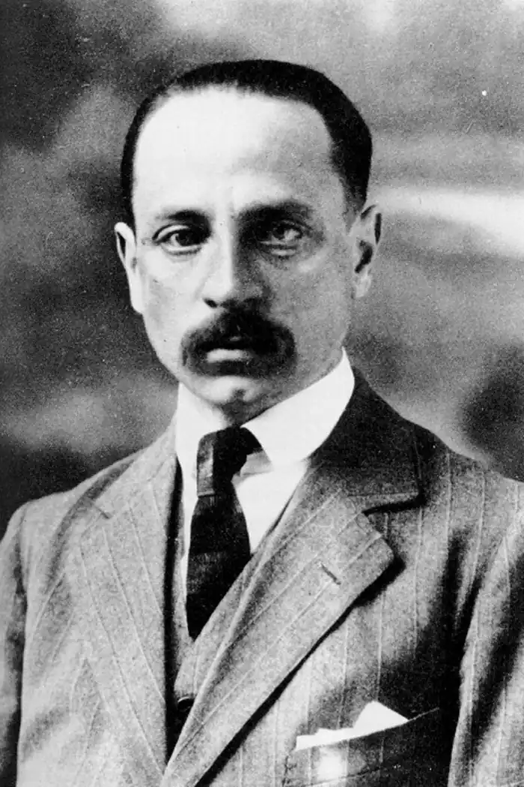

РАЙНЕР МАРІЯ РІЛЬКЕ
(1875-1926)
Двадцяте століття принесло людству не лише зло й найбільші земні трагедії, але й спонукало до пошуку шляхів до втраченої гармонії, до позитивних цінностей. Яскравий приклад такого пошуку — творчість австрійського поета P. M. Рільке. Поезія Рільке, що відкрила новий етап у розвитку поезії європейської, увібрала в себе всі етапи складного шляху естетичних пошуків митця — від неоромантизму та імпресіонізму через заглиблений у філософські та релігійні роздуми символізм до "нової речевості" (стилю, що тяжіє до конкретності зображення і прийшов на зміну експресіоністському пафосу та схематизму). На творчість Рільке глибоко вплинули живопис, скульптура, архітектура та музика. Райнер Марія Рільке народився 1875 року в Празі. Дитинство та юність поета були затьмарені перебуванням в австрійській військовій школі (1886-1891), про яку він все життя згадував зі страхом і відразою. У 1895 році поет вступив на філологічний факультет Празького університету, а пізніше слухав лекції з філології і мистецтвознавства в Мюнхені й Берліні. Основою і вихідним пунктом поетичної еволюції Рільке була німецька класична література. Разом з тим, він активно засвоював і синтезував досвід романських і слов'янських культур. Звідси його спроби творити французькою і російською мовами. Писати вірші Рільке почав рано, і вже 1894 року вийшла його перша збірка "Життя і пісні". Наприкінці XIX століття з'являються наступні книжки поета: "Вінчаний снами" (1896), "Свят-вечір" (1898) і "Мені на свято" (1900). Ранній Рільке — переважно неоромантик і імпресіоніст. У його віршах відтворюються основні мотиви романтичної поезії першої половини XIX століття — самотності, природи й кохання. Ранні вірші Рільке — це, як правило, затьмарені сумом короткі імпресіоністичні замальовки з раптовою зміною образів, грою світла й тіні. Соціальну дійсність, що час від часу проглядається в ранніх творах, Рільке сприймає узагальнено-романтично. Втіленням незрозумілої, але кричущої несправедливості життя найчастіше є місто — зловісно-похмуре, майже мертве. Для Рільке сучасне місто з його засиллям "мертвих речей", різкими контрастами багатства й бідності — незрозуміла аномалія, нагромадження абсурду й страждань, злочин проти гармонії й краси. Свободу дихання вірш Рільке знаходив поза міською метушнею, в тихому спокої передмістя з його садками, струмками, луками, лісами й перелісками. Становлення Рільке-поета завершується на рубежі XX століття, його творчу зрілість засвідчують дві знамениті збірки — "Книга годин" (1901 — 1905) і "Книга картин" (1902, 1906). Після Києва розпочалося майже двомісячне паломництво Рільке по Україні й по Волзі — знайомство з народною, "глибинною Руссю", її особливим світовідчуванням, яке вабило поета обіцянкою подолати "механічність життя" і відчуженість людини. Вирушивши Дніпром "в край чудової України", він пливе до Кременчука, а потім поїздом їде до Полтави. Звідти — до навколишніх сіл, щоб "природу і людей зблизька побачити". Ці враження відбилися у віршах "В оцім селі стоїть останній дім...", "Карл XII, король шведський, мчить по Україні", де бачимо характерне для Рільке сприйняття українського пейзажу "під знаком вічності", на тлі безмежного часу та простору. Останнім етапом українських мандрів поета був Харків, звідки він повернув на Волгу. З глибоким інтересом і любов'ю вивчав поет "давні церкви й собори, в яких багато старих картин і дорогоцінних реліквій". Києво-Печерська лавра згадується в "Книзі годин" у колі безсмертних творінь людства — Венеції, Рима, Флоренції, Пізи й Троїце-Сергієвої лаври. У свідомості поета знову й знову постає образ церкви ("церкви десь на сході"), який у поезії "Ти монастир Господніх ран" чітко прибирає форму Києво-Печерської лаври: Рільке написав також два оповідання з українського побуту — "Як старий Тимофій умирав співаючи" та "Пісня про Правду" (1900). Персонажів цих оповідань ріднить любов до народної української пісні — швець Петро і старий Тимофій дбають, щоб пісня, в якій живе душа народу, не вмерла. Приваблювала Рільке й постать Т. Шевченка. Поет познайомився з творами Кобзаря в російських перекладах, а під час мандрів Україною відвідав його могилу в Каневі. У цілому ж подорожі 1899 та 1900 років стали для Рільке важливим кроком у пізнанні слов'янського світу, в освоєнні його духовних і культурних цінностей. Саме зустріч з Україною стала для Рільке тим поштовхом, який пробудив у ньому нове відчуття природи, реального світу. Він відчув себе причетним до глибинних джерел буття, могутніх витоків стихійних творчих сил природи. Це та сама "жадоба реального", котра знайшла вираження в подальшій творчості поета. Суть митця — в нерозривному, повному й органічному зв'язку зі світом і речами,— проголошує Рільке у вірші "Смерть поета": "Ті люди, що живим поета знали,/ не відали, яким єдиним він / зі світом був: його лицем ставали /ці води, гори, ниви цих долин". Нове світовідчування Рільке, яке він вважав "дарунком Русі", знайшло своє поетичне вираження у "Книзі годин" (1901 —1905), яка складається з трьох циклів — "Книги чернечого життя", "Книги прощ" та "Книги убозтва і смерті". Вона написана від імені "київського ченця" як його молитовне звернення до Бога. Поет уже не тікає від суспільства, від міста в природу — він іде туди свідомо, він природу "обожнює", у ній відкриває істину. Власне "я" відчувається поетом як органічна частка живого космосу, що перебуває у вічному становленні. "Бог" Рільке — це життя, що пульсує в речах та істотах. Божество стає для поета символом, яким позначається цілісність світу, неосяжність природи, нескінченність людської душі — і ліричне висловлювання стає по-справжньому філософським. Напружені пошуки Бога ("Тебе знаходжу всюди і в усьому..."), відчуття неподільної єдності з ним пронизує поетичні рядки: "Згаси мій зір — я все ж тебе знайду,/ Замкни мій слух — я все ж тебе почую,/ я і без ніг до тебе доман-друю,/ без уст тобі обітницю складу". Ліричне дійство третього циклу "Книги годин" — "Книги про убозтво і смерть" відбувається в Парижі, який уособлює буржуазну цивілізацію з її відчуженістю і дегуманізацією життя, але й цей світ, сповнений контрастів, виступає об'єктом болісних переживань ліричного героя. "Книга годин" сповнена витонченої музикальності, що нагадує наймелодійніші вірші П. Верлена. Рільке вдається до різних систем римування, створює своєрідні музикально-поетичні періоди, наповнює вірші алітераціями й асонансами. Та якщо поезія П. Верлена подібна до камерної музики, то "Книга годин" — це справжня симфонія зі складним філософсько-ліричним змістом. У збірці "Книга картин" (1902, 1906) твори за тематикою і за стилем виразно поділяються на кілька груп. У деяких віршах "Книги картин" — "Той, що споглядає", "Той, що читає", "Про фонтани" — єдиною достойною формою людської діяльності оголошено акт споглядання, в якому досягається найвища реальність — стан гармонії. Рільке і тут намагається повернути сучасникам почуття спільності, єдності світу: "Коли від книги очі відведу я,— /Як рідне й знане, все навкруг сприйму,/ Бо й зовні — те, що у мені існує /І тут, і там немає меж всьому". Після "Книги картин" Рільке здобув визначення "поета споглядання". Але це споглядання не пасивне, у ньому — напружені філософські роздуми, пошуки безпомилкового погляду на речі. Рільке можна назвати і "поетом самотності". Розрізненість людей, взаємна непроникність їхніх внутрішніх світів — усе це тяжіло над поетом і спричиняло йому біль. Печаль, елегійний сум, відчай — такою є палітра віршів Рільке "про самотність". У "Книзі годин" та "Книзі картин" органічно поєднуються елементи різних поетичних стилів: французького символізму, "віденського" імпресіонізму, неоромантизму. Стилістичне розмаїття було ознакою інтенсивної внутрішньої боротьби, творчих пошуків, намагання віднайти у віршах ті духовні цінності, які могли б протистояти бездуховності суспільних відносин. Ще на межі XX століття в Рільке виникає напружений інтерес до художнього пізнання і відтворення реального світу. Його "жадоба реального" знайшла стримане й концентроване вираження в книзі "Нові поезії" (1907-1908), яка вирізняється одухотвореною предметністю образів, витонченою і динамічною пластичністю мови. Першорядну роль у цьому відіграло зближення Рільке з французьким скульптором О. Роденом, яке відбулося 1902 року в Парижі. Рільке деякий час навіть був секретарем цього видатного митця. Роден для поета був взірцем пластичного виявлення життя в матеріальних об'єктах і формах. Жити — це значить бачити світ у художніх образах. Цю ідею поет обґрунтував у монографії про Огюста Родена. Не випадково для Рільке, лірика, співака "мінливих" душевних настроїв, ідеалом пластичної довершеності став саме Роден — скульптор, який прагнув подолати споконвічну статичність цього мистецтва. Скульптурні твори Родена — майже завжди образи боротьби з нерухомістю, вони на наших очах немовби вивільняються з кам'яних пут. Великого значення набув для поета і живопис П. Сезанна, який він відкрив для себе трохи згодом. Сезанн прагнув малювати не тільки ту природу, яку ми бачимо, але й ту, яку ми пізнаємо розумом, створювати синтетичний образ предмета й всієї природи, що безпосередньо не відкривається нашому окові. Інтенсивне відчуття живої сили світу речей проймає полотна Сезанна, і цим вони особливо приваблювали Рільке. За часів "Нових поезій" вірш Рільке стає спокійним і стриманим, майже суворим. З'являються монументальні, вагомі образи (у них відчувається і стримана сила скульптур Родена, і "рече-вість" полотен Сезанна). Своїм словом поет ніби вступає у змагання з майстрами пензля і різця. Рільке створює "поезії-речі", котрі виявляють "внутрішнє життя" реалій предметно-чуттєвого світу. Це своєрідні гімни людській здатності вмістити в душу всю безмежність Всесвіту. Поет для Рільке в цей період — творець "речей мистецтва", такий самий, як ювелір, скульптор, живописець. Про це виразно свідчать численні вірші збірки "Нові поезії", такі як "Портал", "Пантера", "Фламінго", "Іспанська танцівниця". Тонку майстерність виявляє Рільке, фіксуючи рух в об'єктах, що сприймаються оком як нерухомі.